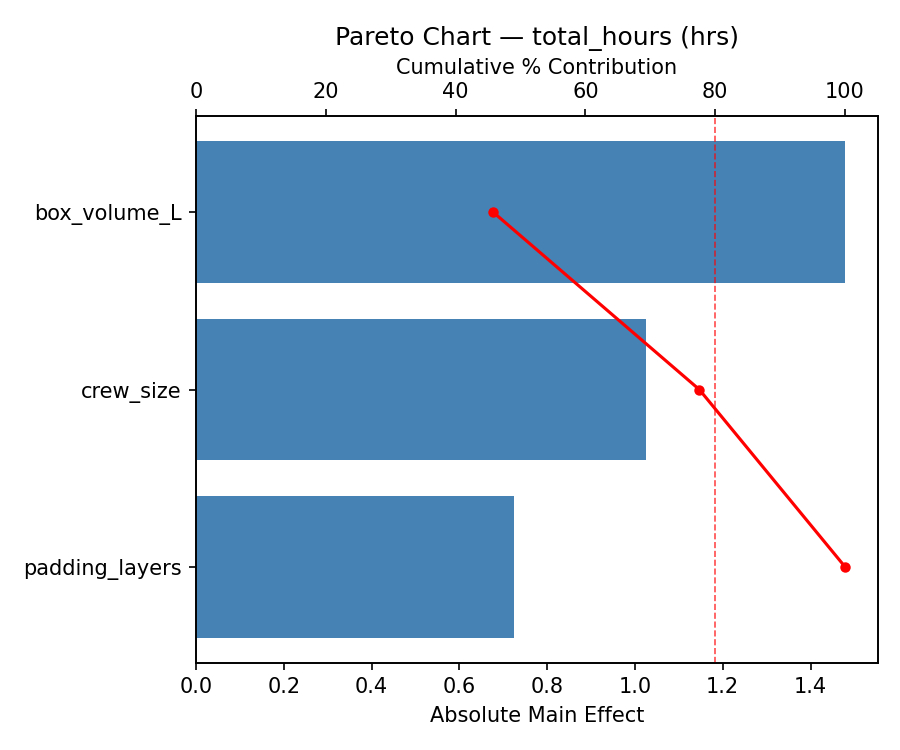
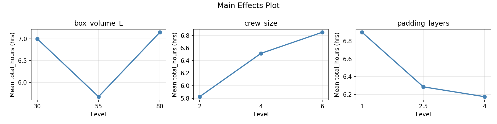
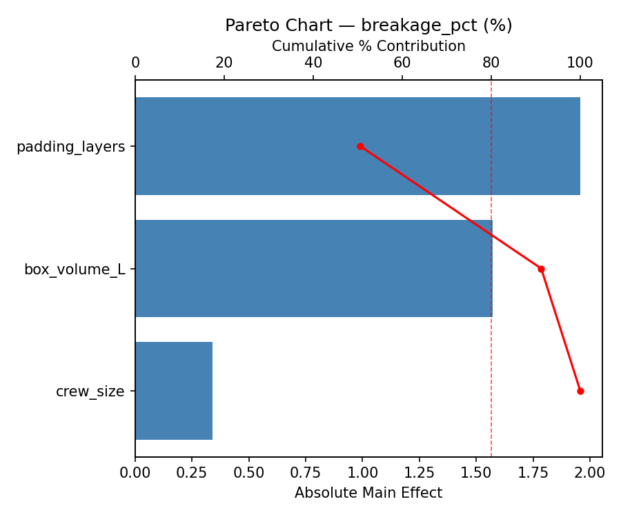
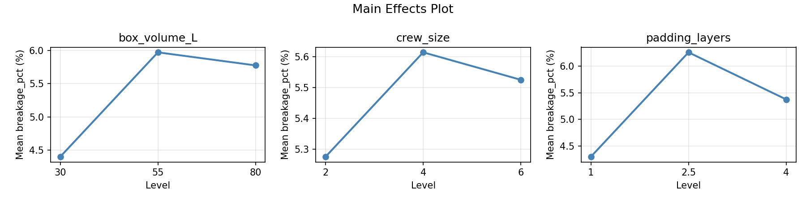
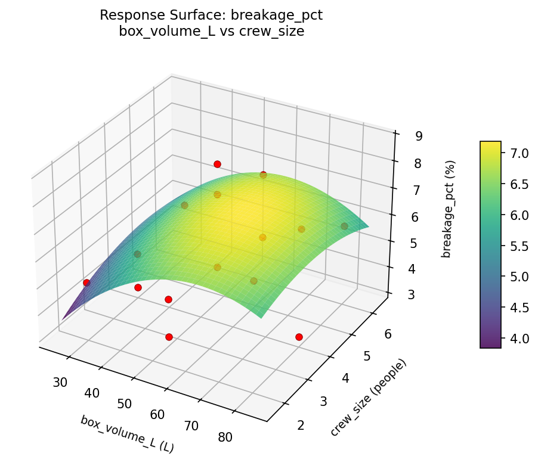
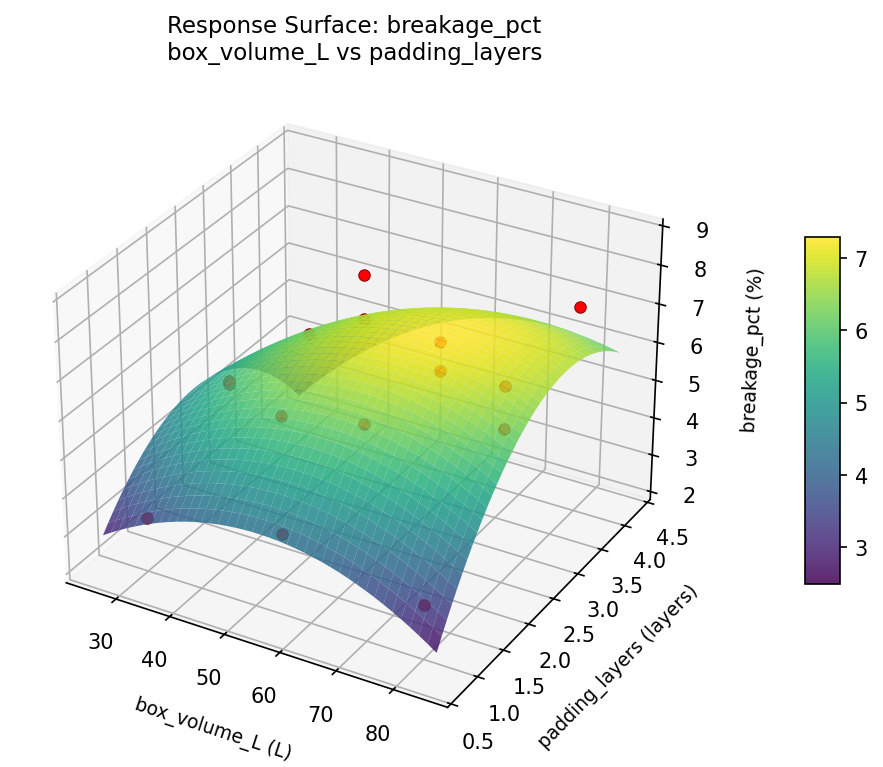
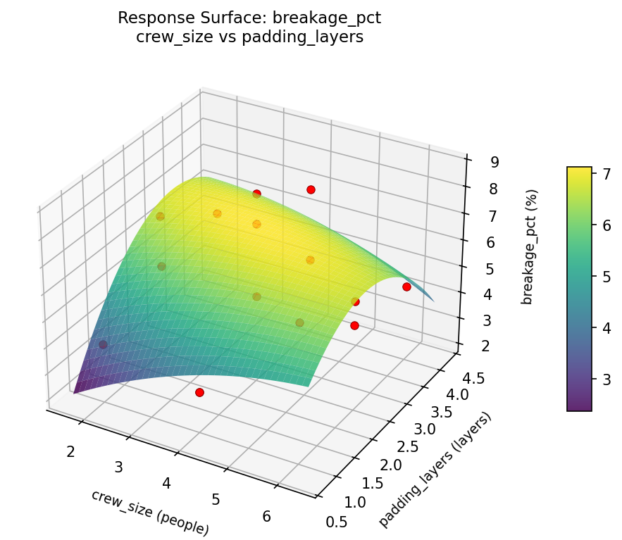
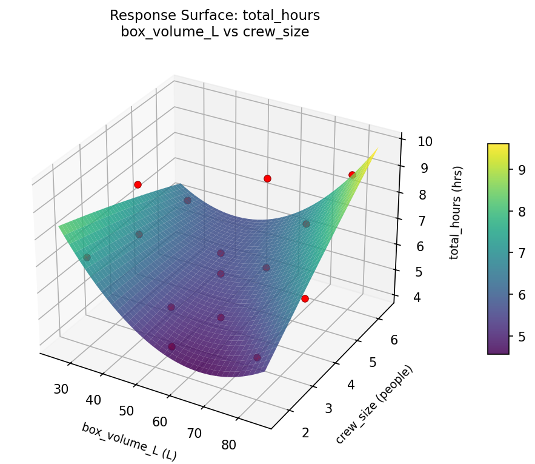
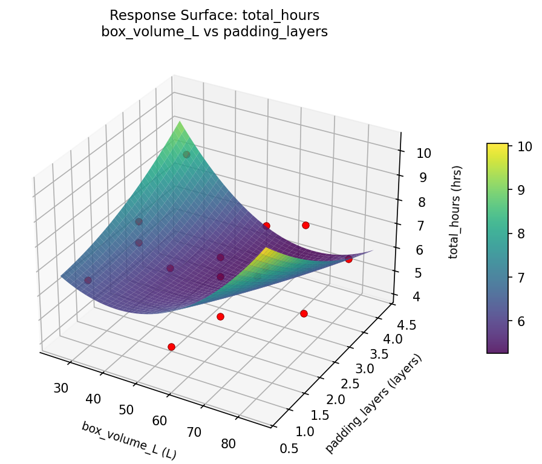
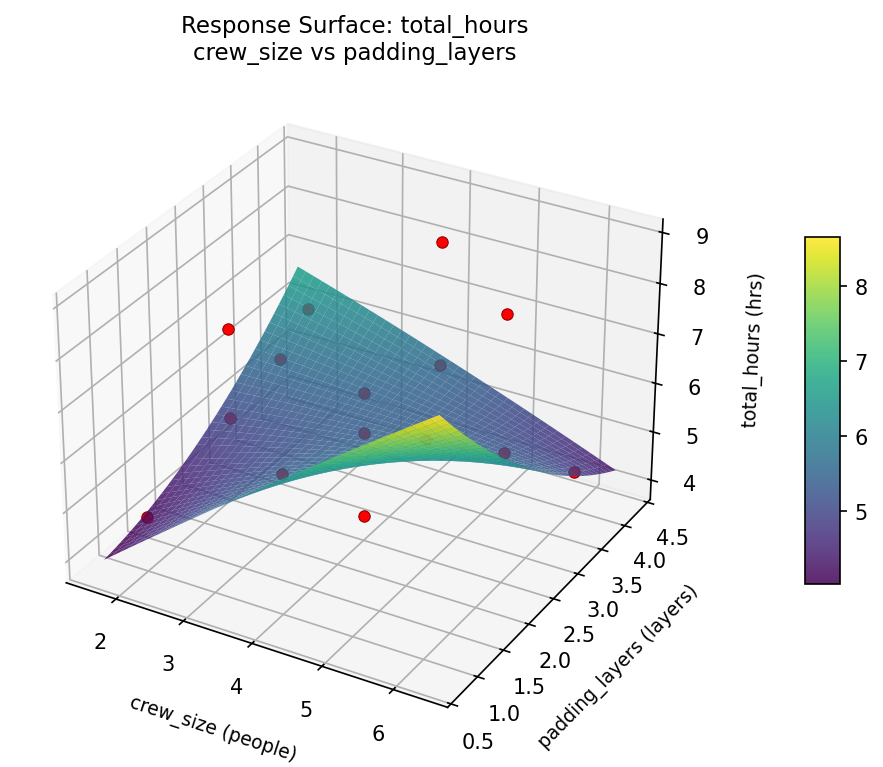

Summary
This experiment investigates moving day logistics. Box-Behnken design to minimize total move time and breakage by tuning box size, crew size, and truck loading strategy padding thickness.
The design varies 3 factors: box volume L (L), ranging from 30 to 80, crew size (people), ranging from 2 to 6, and padding layers (layers), ranging from 1 to 4. The goal is to optimize 2 responses: total hours (hrs) (minimize) and breakage pct (%) (minimize). Fixed conditions held constant across all runs include distance km = 20, apartment floor = 3.
A Box-Behnken design was chosen because it efficiently fits quadratic models with 3 continuous factors while avoiding extreme corner combinations — requiring only 15 runs instead of the 8 needed for a full factorial at two levels.
Quadratic response surface models were fitted to capture potential curvature and factor interactions. The RSM contour plots below visualize how pairs of factors jointly affect each response.
Key Findings
For total hours, the most influential factors were box volume L (45.8%), crew size (31.7%), padding layers (22.5%). The best observed value was 4.1 (at box volume L = 55, crew size = 4, padding layers = 2.5).
For breakage pct, the most influential factors were padding layers (50.6%), box volume L (40.6%), crew size (8.8%). The best observed value was 3.2 (at box volume L = 55, crew size = 2, padding layers = 1).
Recommended Next Steps
- Run confirmation experiments at the predicted optimal settings to validate the model.
- Consider whether any fixed factors should be varied in a future study.
Experimental Setup
Factors
| Factor | Low | High | Unit |
|---|
box_volume_L | 30 | 80 | L |
crew_size | 2 | 6 | people |
padding_layers | 1 | 4 | layers |
Fixed: distance_km = 20, apartment_floor = 3
Responses
| Response | Direction | Unit |
|---|
total_hours | ↓ minimize | hrs |
breakage_pct | ↓ minimize | % |
Configuration
{
"metadata": {
"name": "Moving Day Logistics",
"description": "Box-Behnken design to minimize total move time and breakage by tuning box size, crew size, and truck loading strategy padding thickness"
},
"factors": [
{
"name": "box_volume_L",
"levels": [
"30",
"80"
],
"type": "continuous",
"unit": "L"
},
{
"name": "crew_size",
"levels": [
"2",
"6"
],
"type": "continuous",
"unit": "people"
},
{
"name": "padding_layers",
"levels": [
"1",
"4"
],
"type": "continuous",
"unit": "layers"
}
],
"fixed_factors": {
"distance_km": "20",
"apartment_floor": "3"
},
"responses": [
{
"name": "total_hours",
"optimize": "minimize",
"unit": "hrs"
},
{
"name": "breakage_pct",
"optimize": "minimize",
"unit": "%"
}
],
"settings": {
"operation": "box_behnken",
"test_script": "use_cases/197_moving_day_logistics/sim.sh"
}
}
Experimental Matrix
The Box-Behnken Design produces 15 runs. Each row is one experiment with specific factor settings.
| Run | box_volume_L | crew_size | padding_layers |
|---|
| 1 | 55 | 2 | 1 |
| 2 | 55 | 4 | 2.5 |
| 3 | 80 | 4 | 4 |
| 4 | 80 | 4 | 1 |
| 5 | 55 | 4 | 2.5 |
| 6 | 55 | 4 | 2.5 |
| 7 | 30 | 4 | 4 |
| 8 | 80 | 2 | 2.5 |
| 9 | 55 | 2 | 4 |
| 10 | 80 | 6 | 2.5 |
| 11 | 30 | 4 | 1 |
| 12 | 55 | 6 | 4 |
| 13 | 30 | 2 | 2.5 |
| 14 | 30 | 6 | 2.5 |
| 15 | 55 | 6 | 1 |
Step-by-Step Workflow
1
Preview the design
$ python doe.py info --config use_cases/197_moving_day_logistics/config.json
2
Generate the runner script
$ python doe.py generate --config use_cases/197_moving_day_logistics/config.json \
--output use_cases/197_moving_day_logistics/results/run.sh --seed 42
3
Execute the experiments
$ bash use_cases/197_moving_day_logistics/results/run.sh
4
Analyze results
$ python doe.py analyze --config use_cases/197_moving_day_logistics/config.json
5
Get optimization recommendations
$ python doe.py optimize --config use_cases/197_moving_day_logistics/config.json
6
Generate the HTML report
$ python doe.py report --config use_cases/197_moving_day_logistics/config.json \
--output use_cases/197_moving_day_logistics/results/report.html
Features Exercised
| Feature | Value |
|---|
| Design type | box_behnken |
| Factor types | continuous (all 3) |
| Arg style | double-dash |
| Responses | 2 (total_hours ↓, breakage_pct ↓) |
| Total runs | 15 |
Analysis Results
Generated from actual experiment runs using the DOE Helper Tool.
Response: total_hours
Top factors: box_volume_L (45.8%), crew_size (31.7%), padding_layers (22.5%).
Pareto Chart

Main Effects Plot

Response: breakage_pct
Top factors: padding_layers (50.6%), box_volume_L (40.6%), crew_size (8.8%).
Pareto Chart

Main Effects Plot

Response Surface Plots
3D surfaces fitted with quadratic RSM. Red dots are observed data points.
breakage pct box volume L vs crew size

breakage pct box volume L vs padding layers

breakage pct crew size vs padding layers

total hours box volume L vs crew size

total hours box volume L vs padding layers

total hours crew size vs padding layers

Full Analysis Output
RSM surface: rsm_total_hours_box_volume_L_vs_crew_size.png
RSM surface: rsm_total_hours_box_volume_L_vs_padding_layers.png
RSM surface: rsm_total_hours_crew_size_vs_padding_layers.png
RSM surface: rsm_breakage_pct_box_volume_L_vs_crew_size.png
RSM surface: rsm_breakage_pct_box_volume_L_vs_padding_layers.png
RSM surface: rsm_breakage_pct_crew_size_vs_padding_layers.png
=== Main Effects: total_hours ===
Factor Effect Std Error % Contribution
--------------------------------------------------------------
box_volume_L 1.4786 0.3883 45.8%
crew_size 1.0250 0.3883 31.7%
padding_layers 0.7250 0.3883 22.5%
=== Summary Statistics: total_hours ===
box_volume_L:
Level N Mean Std Min Max
------------------------------------------------------------
30 4 7.0000 0.9487 6.2000 8.3000
55 7 5.6714 1.3635 4.1000 7.9000
80 4 7.1500 1.8628 5.3000 8.9000
crew_size:
Level N Mean Std Min Max
------------------------------------------------------------
2 4 5.8250 1.0500 4.7000 7.1000
4 7 6.5143 1.5497 4.1000 8.6000
6 4 6.8500 1.9774 4.4000 8.9000
padding_layers:
Level N Mean Std Min Max
------------------------------------------------------------
1 4 6.9000 1.7301 4.7000 8.6000
2.5 7 6.2857 1.5049 4.1000 8.9000
4 4 6.1750 1.6132 4.4000 8.3000
=== Main Effects: breakage_pct ===
Factor Effect Std Error % Contribution
--------------------------------------------------------------
padding_layers 1.9571 0.4237 50.6%
box_volume_L 1.5714 0.4237 40.6%
crew_size 0.3393 0.4237 8.8%
=== Summary Statistics: breakage_pct ===
box_volume_L:
Level N Mean Std Min Max
------------------------------------------------------------
30 4 4.4000 0.8287 3.2000 5.0000
55 7 5.9714 1.7802 3.9000 8.7000
80 4 5.7750 1.8191 3.2000 7.2000
crew_size:
Level N Mean Std Min Max
------------------------------------------------------------
2 4 5.2750 1.2393 3.9000 6.9000
4 7 5.6143 2.2132 3.2000 8.7000
6 4 5.5250 1.0658 4.5000 6.9000
padding_layers:
Level N Mean Std Min Max
------------------------------------------------------------
1 4 4.3000 1.7645 3.2000 6.9000
2.5 7 6.2571 1.5087 4.9000 8.7000
4 4 5.3750 1.2738 4.5000 7.2000
Pareto chart (total_hours): use_cases/197_moving_day_logistics/results/analysis/pareto_total_hours.png
Pareto chart (breakage_pct): use_cases/197_moving_day_logistics/results/analysis/pareto_breakage_pct.png
Main effects (total_hours): use_cases/197_moving_day_logistics/results/analysis/main_effects_total_hours.png
Main effects (breakage_pct): use_cases/197_moving_day_logistics/results/analysis/main_effects_breakage_pct.png
Optimization Recommendations
=== Optimization: total_hours ===
Direction: minimize
Best observed run: #15
box_volume_L = 55
crew_size = 4
padding_layers = 2.5
Value: 4.1
RSM Model (linear, R² = 0.3945, Adj R² = 0.2294):
Coefficients:
intercept +6.4200
box_volume_L -0.5375
crew_size +0.4125
padding_layers +1.0500
RSM Model (quadratic, R² = 0.6105, Adj R² = -0.0905):
Coefficients:
intercept +5.8000
box_volume_L -0.5375
crew_size +0.4125
padding_layers +1.0500
box_volume_L*crew_size -0.1250
box_volume_L*padding_layers +0.5000
crew_size*padding_layers +0.7500
box_volume_L^2 +0.2125
crew_size^2 +0.9625
padding_layers^2 -0.0125
Curvature analysis:
crew_size coef=+0.9625 convex (has a minimum)
box_volume_L coef=+0.2125 convex (has a minimum)
padding_layers coef=-0.0125 negligible curvature
Notable interactions:
crew_size*padding_layers coef=+0.7500 (synergistic)
box_volume_L*padding_layers coef=+0.5000 (synergistic)
Predicted optimum (from linear model):
box_volume_L = 30
crew_size = 4
padding_layers = 4
Predicted value: 8.0075
Model quality: Weak fit — consider adding center points or using a different design.
Factor importance:
1. padding_layers (effect: 2.1, contribution: 46.3%)
2. crew_size (effect: 1.4, contribution: 30.0%)
3. box_volume_L (effect: 1.1, contribution: 23.7%)
=== Optimization: breakage_pct ===
Direction: minimize
Best observed run: #7
box_volume_L = 55
crew_size = 2
padding_layers = 1
Value: 3.2
RSM Model (linear, R² = 0.0998, Adj R² = -0.1457):
Coefficients:
intercept +5.5000
box_volume_L -0.5625
crew_size -0.1500
padding_layers +0.3625
RSM Model (quadratic, R² = 0.6198, Adj R² = -0.0646):
Coefficients:
intercept +5.8333
box_volume_L -0.5625
crew_size -0.1500
padding_layers +0.3625
box_volume_L*crew_size -0.2250
box_volume_L*padding_layers -1.2000
crew_size*padding_layers -1.5250
box_volume_L^2 +0.4833
crew_size^2 -0.1917
padding_layers^2 -0.9167
Curvature analysis:
padding_layers coef=-0.9167 concave (has a maximum)
box_volume_L coef=+0.4833 convex (has a minimum)
crew_size coef=-0.1917 concave (has a maximum)
Notable interactions:
crew_size*padding_layers coef=-1.5250 (antagonistic)
box_volume_L*padding_layers coef=-1.2000 (antagonistic)
Predicted optimum (from quadratic model):
box_volume_L = 30
crew_size = 4
padding_layers = 4
Predicted value: 7.5250
Model quality: Moderate fit — use predictions directionally, not precisely.
Factor importance:
1. padding_layers (effect: 1.3, contribution: 47.5%)
2. box_volume_L (effect: 1.1, contribution: 41.1%)
3. crew_size (effect: 0.3, contribution: 11.4%)